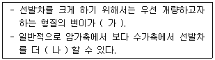
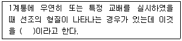
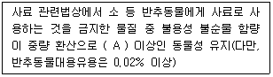
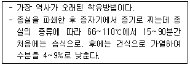
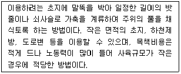
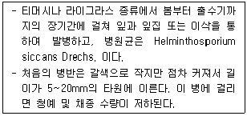
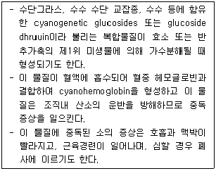
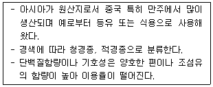
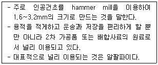

축산기사 (2016-03-06 기출문제)
1과목: 가축육종학
1. 어느 Holstein 종 젖소 집단에 있어 B의 유전자 빈도가 0.9이고 b의 유전자 빈도는 0.1이다. 이 집단이 Hardy-Weinberfg 평형 상태에 있을 때 Bb의 빈도는?
- 0.14
- 0.16
- 0.18
- 0.20
(정답률: 73%)

2. 젖소 개량시 주로 이용되는 유전자 작용은?
- 초우성 유전자 작용
- 상위성 유전자 작용
- 우성 유전자 작용
- 상가성 유전자 작용
(정답률: 59%)
3. 후대검정을 통해 인공 수정용 종모우를 선발하는 경우 다음 중 젖소 개량에 있어 가장 크게 기여하는 것은?
- 종모우의 아비소 선발
- 종모우의 어미소 선발
- 종빈우의 아비소 선발
- 종빈우의 어미소 선발
(정답률: 62%)
4. 형질을 발현시키는데 있어서 유전과 환경간의 관계를 바르게 설명한 것은?
- 유전적으로 우수한 가축은 불량한 환경에도 영향을 받지 않는다.
- 아무리 환경조건이 좋다하더라도 그 개체가 태어날 때부터 가진 유전적 한계선은 초과하지 못한다.
- 개체의 유전적 한계선은 환경조건에 따라 변화될 수 있다.
- 개체의 능력은 유전과 무관하게 단지 환경의 영향으로 결정된다.
(정답률: 72%)
5. 선발이란 가축을 개량하는데 쓰이는 중요한 도구이다. 선발의 효과는 무엇인가?
- 새로운 유전자를 생성하는 것이다.
- 새로운 유전자를 없애는 것이다.
- 기존의 우량 유전자를 더 많게 하는 것이다.
- 기존의 우량 유전자를 더 적게 하는 것이다.
(정답률: 86%)
6. 우성백색 유전자를 가진 Leghorn종(IICC)과 열성백색 유전자를 가진 Wyandott종(iicc)을 교배하여 얻은 F1 끼리 다시 교배시켜 얻은 F2 의 백색과 유색의 분리비는?
- 15 : 1
- 14 : 2
- 13 : 3
- 12 : 4
(정답률: 73%)
7. 잡종강세를 이용한 돼지의 윤환교배란?
- 서로 다른 2품종을 매세대 교대로 교배
- 서로 다른 3품종을 매세대 교대로 교배
- 서로 같은 2품종을 가지고 체계적으로 교배
- 서로 같은 4품종을 매세대 암, 수를 교대로 교배
(정답률: 84%)
8. 동일한 품종 내에서 서로 다른 2개의 근교 계통간 교배에 의하여 생산된 1대 잡종은?
- Incross
- Incrossbred
- Topcross
- Topcrossbred
(정답률: 53%)
9. 다음 중 육용계에서 생체중의 실현 유전력은?
- 0.15 ~ 0.25
- 0.30 ~ 0.40
- 0.50 ~ 0.60
- 0.70 ~ 0.80
(정답률: 62%)
10. 닭의 깃털색은 우성 백색(I)이 유색(i)에 대하여, 볏 모양에 있어 이중관(D)은 단관(d)에 대하여, 깃털 모양에 있어 머프(Mb)는 아닌 것(mb)에 대하여, 피부색에 있어 백색(W)은 황색(w)에 대하여 각각 우성으로 작용하며 이들 유전자 간에는 독립적으로 유전한다고 한다. IiDdMbmbWw 개체끼리의 교배에 의해 태어난 병아리 중 깃털은 백색, 볏은 단관, 깃털모양은 머프이고 피부색은 황색인 개체의 비율은?
- 27/256
- 9/256
- 27/64
- 9/64
(정답률: 69%)
11. 육용계의 선발에서 복강지방에 대하여 선발할 경우 이용하기 어려운 선발 방법은?
- 개체 선발
- 전자매선발
- 반자매선발
- 후대검정
(정답률: 55%)
12. 다음 중 염색체의 일부가 같은 염색체의 다른 부분에 결합하는 것을 무엇이라 하는가?
- 결실
- 역위
- 중복
- 전좌
(정답률: 69%)
13. 유전적 개량량(genetic gain)을 크게 하기 위한 설명 중 틀린 것은?
- 유전력이 커야한다.
- 세대 간격이 길어야 한다.
- 대상형질의 선발차가 커야 한다.
- 육종가와 표현형가 사이에 상관계수가 높아야 한다.
(정답률: 87%)
14. 모돈 생산능력지수(SPI)에 의해 어미 돼지를 선발하는 경우 기준이 되는 것은?
- 생시 생존 산자수와 모돈의 사료 효율
- 생시 생존 산자수와 21일령 복당 체중
- 이유 두수와 모돈의 사료 효율
- 모돈의 사료효율과 21일령 복당 체중
(정답률: 82%)
15. 다음 형질 중 보족유전자의 작용에 의하여 발현되는 것은?
- 닭의 우성백색
- 닭의 호두관
- 닭의 각모
- 닭의 귀뿔색
(정답률: 82%)
16. 다음 중 (가), (나)에 알맞은 내용은?

- 가 : 작아야한다, 나 : 작게
- 가 : 작아야한다, 나 : 크게
- 가 : 커야 한다, 나 : 작게
- 가 : 커야 한다, 나 : 크게
(정답률: 82%)
17. 유전력이 높은 형질을 개량하는데 효과적인 선발방법은?
- 혈통선발
- 개체선발
- 후대검정
- 가계선발
(정답률: 74%)
18. 양적형질표현의 주된 유전자 작용은?
- 1개 또는 소수의 유전자에 의해 영향을 받는다.
- 대단히 많은 수의 유전자에 의해 영향을 받는다.
- 주로 우성 작용에 의해 영향을 받는다.
- 상위 작용에 의해 영향을 받는다.
(정답률: 68%)
19. 다음 중 ( )에 알맞은 내용은?

- 강력유전
- 득성유전
- 귀선유전
- 모색유전
(정답률: 70%)
20. 특정 집단의 유전적 변이가 0이고 표현형 분산이 100일 때 이 집단에서 선발의 효율성은 얼마인가?
- 100%
- 50%
- 25%
- 0%
(정답률: 78%)
2과목: 가축번식생리학
21. 다음 중 유즙의 배출 경로를 순서대로 바르게 나열한 것은?
- 유선포→유선관→유선소관→유두조→유두관→유선조
- 유선관→유두조→유선소관→유선포→유선조→유두관
- 유선포→유선소관→유선관→유선조→유두조→유두관
- 유선포→유선소관→유선관→유두조→유선조→유두관
(정답률: 76%)
22. 다음 중 소에서 배란이 일어나는 시기로 옳은 것은?
- 발정 종료 후 8~11시간
- 발정 전기
- 발정기
- 발정 종료 직후
(정답률: 72%)
23. 다음 중 난자의 생리에 대한 설명으로 옳지 않은 것은?
- 대부분 포유동물의 배란은 난모세포가 제2감수분열 중기 상태에서 일어난다.
- 배란된 난자는 정자와 수정 후 제1극체가 형성된다.
- 난모세포는 2차례의 감수분열을 거쳐 난자로 완성된다.
- 다정자 침입 방지를 위하여 난자는 투명대 반응을 일으킨다.
(정답률: 70%)
24. 가축별 수정적기로 옳지 않은 것은?
- 소 : 발정 종료 전후
- 돼지 : 수퇘지 허용시작 후 10~25시간 사이
- 면양 : 발정 개시 후 20~25시간
- 산양 : 발정 종료 직후
(정답률: 53%)
25. 돼지의 발정 징후에 해당되지 않는 것은?
- 외음부과 충혈되고 부어 오른다.
- 사료 섭취량이 증가한다.
- 질 밖으로 점액을 분비한다.
- 다른 돼지의 승가를 허용한다.
(정답률: 86%)
26. 태반을 형태학적으로 분류할 때 돼지의 태반으로 옳은 것은?
- 궁부성 태반
- 대상 태반
- 반상 태반
- 산재성 태반
(정답률: 75%)
27. 다음 중 분만에 관한 설명으로 옳지 않은 것은?
- 분만 과정은 진통부터 후산까지의 과정을 뜻한다.
- 분만직전의 자궁 내 태위와 태향은 축종에 따라 다르다.
- 소, 말과 같은 동물은 분만직전에 상태향에서 하태향으로 회전한다.
- 제1파수는 요막이 파열되는 것을 의미한다.
(정답률: 76%)
28. 다음 중 가축별 평균 임신기간으로 옳은 것은?
- 소 : 237일
- 돼지 : 144일
- 면양 : 148일
- 토끼 : 62일
(정답률: 64%)
29. 다음 중 비유(泌乳) 유지(維持)에 필요한 호르몬이 아닌 것은?
- 프로락틴(Prolactin)
- 부신피질자극호르몬(ACTH)
- 코르티솔(Cortisol)
- 난포자극호르몬(FSH)
(정답률: 46%)
30. 다음 중 성스테로이드 호르몬에 해당하는 것은?
- 갑상선자극호르몬
- 프로게스테론
- 프로락틴
- 부신피질자극호르몬
(정답률: 76%)
31. 다음 중 인공수정의 장점에 해당하지 않는 것은?
- 우수한 종모축의 이용범위가 확대된다.
- 우수 종모축을 이용한 가축 개량을 촉진시킬 수 있다.
- 특별한 기술과 시설이 필요하지 않다.
- 특별한 주의 없이도 생식기 질병을 일으킬 확률이 매우 낮다.
(정답률: 82%)
32. 다음 중 암가축의 발정징후와 직결되는 호르몬은?
- 에스트로겐
- 테스토스테론
- 릴랙신
- 옥시토신
(정답률: 78%)
33. 다음 중 성선자극호르몬(GTH)에 대한 설명으로 옳지 않은 것은?
- 난포자극호르몬(FSH)은 난소에서 난포 발달을 촉진한다.
- 황체형성호르몬(LH)은 암가축의 배란을 유발하며, 황체형성 기능을 갖고 있다.
- 성선에 작용하는 스테로이드(Steroid)계 호르몬이다.
- 황체형성호르몬(LH)은 수가축의 고환에서 테스토스테론의 합성을 촉진한다.
(정답률: 65%)
34. 다음 중 염색체가 들어 있는 정자의 부위는?
- 종부
- 주부
- 두부
- 경부
(정답률: 88%)
35. 다음 중 수정란 이식의 장점이 아닌 것은?
- 우수한 모계의 유전형질을 이어받은 자축을 단기간에 다수 생산할 수 있다.
- 인위적인 쌍태유기에 이용하여 가축의 생산성을 높일 수 있다.
- 우수 종축 구입비 및 운송비를 절감할 수 있다.
- 자연교배에 비해 번식 방법이 편리하다
(정답률: 69%)
36. 다음 중 젖소 착유 시 유즙 분비를 촉진시키는 뇌하수체 후엽 호르몬은?
- 에스트로젠
- 프로게스테론
- 프로락틴
- 옥시토신
(정답률: 82%)
37. 다음 중 발정지속기간이 가장 긴 가축은?
- 소
- 돼지
- 말
- 면양
(정답률: 68%)
38. 가축의 발생과정에서 내배엽에서 분화되는 것은?
- 간
- 신경계
- 뼈
- 심장
(정답률: 54%)
39. 다음 중 수정란 이식의 최적 부위는?
- 자궁각 선단
- 자궁체 하단
- 자궁 경관 내
- 질심부
(정답률: 65%)
40. 닭의경우 계란의 형성 시 난각이 형성되는 생식 기관은?
- 난관 누두부
- 난백 분비부
- 난관 협부
- 자궁
(정답률: 46%)
3과목: 가축사양학
41. 오메가-3 지방산에는 불포화지방산이 많이 함유되어 있다. 불포화지방산의 특성이 아닌 것은?
- 오존에 의해 분해된다.
- 요오드 원소들이 붙을 수 있다.
- 상온에서 모두 고체 상태로 존재한다.
- 산소와의 이중결합반응으로 peroxide를 형성한다.
(정답률: 77%)
42. 돼지사료에 연지방 함량이 높으면 생축, 가공용으로 불리하다고 한다. 다음 사료 중 연지방 사료는?
- 야자박
- 호밀
- 탈지유
- 아마인박
(정답률: 51%)
43. 위에서 주로 분비되는 단백질 분해 효소는?
- Trypsin
- Carboxypetidase
- Amylase
- Pepsin
(정답률: 80%)
44. 사료를 펠렛(pellet)으로 가공할 때 이점이 아닌 것은?
- 사료 급여시 먼지 발생이 적다.
- 선택적 채식과 사료낭비가 적다.
- 사료의 부피를 감소시킨다.
- 지방성분이 많은 사료가공에 적합하다.
(정답률: 77%)
45. 필수지방산이며 프로스타글란딘(prostaglandin) 호르몬의 전구물질인 지방산은?
- Linoleic acid
- Linolenic acid
- Arachidonic acid
- Stearic acid
(정답률: 54%)
46. 산란게 병아리 사양시 첫 모이급여 방법 중 가장 옳은 것은?
- 부화직후 바로 급여
- 병아리 도착 후 사료와 물을 함께 급여
- 병아리 도착 후 물을 먼저 먹인 후 사료 급여
- 부화 후 3~4일 후 급여
(정답률: 78%)
47. 수용성 비타민이 체내에서 생합성 되기 때문에 사료에 필수적으로 공급해 줄 필요가 없는 동물은?
- 소
- 돼지
- 가금
- 개
(정답률: 77%)
48. 자돈의 포유관리에 관한 설명 중 부적당한 것은?
- 일반적으로 2~3주가 지나면 사료섭취가 가능하다.
- 생후 3~4주부터 계속하여 철분을 주사한다.
- 거세는 생후 2~3주에 하는 것이 좋다.
- 이유 1주일 전부터 모돈의 사료를 조금씩 줄여서 건유를 촉진시킨다.
(정답률: 66%)
49. 반추동물의 소화작용 중 타액(침)의 기능으로 옳지 않은 것은?
- 타액은 식도의 내면을 습윤하게 하여 반추시 위에 있는 사료를 입으로 토출하는 것을 막아준다.
- 타액은 사료에 습윤성을 주어 저작과 삼키는 것을 도와준다.
- 반추동물의 타액은 알칼리성으로 반추위에서 발효될 때 생성되는 산을 중화시키는 완충제 역할을 한다.
- 반추동물의 타액은 Na+ , K+ , Ca2+ , Mg2+ , Cl− , HCO3− , 요소 등이 비교적 높은 농도로 함유되어 있어 반추위내 미생물에 영양소 공급원이 되기도 한다.
(정답률: 66%)
50. 다음 중 젖소에 있어서 최대 산유량을 얻기 위하여 권장되는 건유 기간은?
- 30 ~ 40일
- 50 ~ 60일
- 70 ~ 80일
- 90 ~ 100일
(정답률: 78%)
51. 반추동물의 경우 반추위내 이상발효에 의한 과도한 가스생성과 트림 반사의 저하로 극도로 위가 팽창하는 대사성 질환이 발생하는데, 이를 무엇이라 하는가?
- 케톤증
- 유열
- 고창증
- 그래스 테타니
(정답률: 83%)
52. 젖소 송아지의 사양관리 중 초유와 관련된 설명으로 잘못 된 것은?
- 초유는 태변의 배출을 촉진시키는 역할을 한다.
- 초유에는 송아지 성장에 필요한 영양소가 충분히 들어 있다.
- 경산우의 초유보다는 초산우의 초유에 면역물질이 많다.
- 초유에는 질병에 대한 저항력을 갖게 하는 면역글로불린이 들어 있다.
(정답률: 78%)
53. 조사료의 양이 부족하면 우유성분 중 감소되는 성분은?
- 유단백질
- 유지방
- 유당
- 알부민
(정답률: 59%)
54. 대두박(44% 조단백질)과 옥수수(9% 조단백질)를 혼합하여 1000kg의 16% 조단백질 사료를 만들려면 대두박은 얼마나 필요한가?
- 200kg
- 250kg
- 300kg
- 400kg
(정답률: 60%)
55. 중성지방은 지방 분해효소인 리파아제(lipase)에 의해 어떤 물질로 분해되는가?
- 글리세롤(glycerol) + 지방산(fatty acid)
- 글리세롤(glycerol) + 콜레스테롤(cholesterol)
- 지방산(fatty acid) + 콜레스테롤(cholesterol)
- 레시틴(lecithin) + 지방산(fatty acid)
(정답률: 75%)
56. 일일 30kg 이상 산유하는 젖소의 사료(배합사료+조사료)에서 조섬유는 적어도 몇 %이상 함유해야 하는가?
- 56%
- 36%
- 17%
- 6%
(정답률: 58%)
57. 체외 소화 시험시 지시제의 조건이 아닌 것은?
- 생리적으로 불활성 물질일 것
- 독성이 없을 것
- 소화관에서 흡수 또는 대사되는 물질일 것
- 소화 내용물과 쉽게 섞이고 고르게 분포될 것
(정답률: 66%)
58. 다음 중 ( A )에 알맞은 내용은?

- 0.⑤%
- 0.10%
- 0.15%
- 0.20%
(정답률: 45%)
59. 반추동물은 단위동물과 달리 섬유질성 탄수화물을 주사료로 이용할 수 있다. 그 이유는 무엇인가?
- 타액 중에 분해효소를 가지고 있기 때문이다.
- 췌장에서 효소를 분비하기 때문이다.
- 장액의 분해기능이 특수하기 때문이다.
- 반추위 내 미생물 중에 섬유소 분해효소를 가지고 있기 때문이다.
(정답률: 84%)
60. 반추동물의 위 중에서 단위동물과 같이 소화 효소가 분비되는 곳은?
- 1위
- 2위
- 3위
- 4위
(정답률: 76%)
4과목: 사료작물학 및 초지학
61. 다음 중 옥수수의 사일리지 1차 수확적기는?
- 유숙기
- 황숙기
- 완숙기
- 고숙기
(정답률: 78%)
62. 2ha의 목구에서 500kg 홀스타인 착유우 20두와 300kg 육성우 10두가 방목 되었다면 이 목구의 ha당 가축단위(Animal Unit, AU)는 얼마인가?
- 10 AU
- 13 AU
- 15 AU
- 20 AU
(정답률: 63%)
63. 다음에서 설명하는 것은?

- 압축후 용매추출법
- 직접 용매추출법
- 스크류 가공법
- 수압법
(정답률: 57%)
64. 지형을 바꾸지 않고 경사대로 경운하는 경우조성 공법의 종류는?
- 발굽갈이법
- 계단공법
- 개량산성공법
- 산성공법
(정답률: 50%)
65. 다음 중 가축의 답압에 가장 약한 축종은?
- 톨오트그라스
- 화이트클로버
- 페레니얼라이그라스
- 벤트그라스
(정답률: 39%)
66. 다음에서 설명하는 것은?

- 계목
- 윤환방목
- 대상방목
- 연속방목
(정답률: 65%)
67. 다음 중 목초 종자의 특성에 맞는 파종상을 틀린 것은?
- 경운층과 미경운된 하층심토와 직접 접촉되고 연결되어 있어 토양수분이 아래로만 이동할 수 있어야한다.
- 목초가 파종되는 표토는 부드럽고 입상이어야 하나 너무 곱든가 가루모양이어서는 안 된다.
- 종자가 파종되는 바로 밑의 토양은 단단해야 한다.
- 상층토양이나 하층토양에 관계없이 수분 함량이 충분해야 한다.
(정답률: 53%)
68. 대상살포법과 전면살포법을 비교했을 때 대상살포법의 특징으로 틀린 것은?
- 전면 살포법에 비해 제추제 구입비용을 줄일 수 있다.
- 잡초제거가 완전하기 때문에 유식물 생장을 촉진할 수 있다.
- 남아 있는 기존 식생이 동반작물 역할을 하여 잡초 생장을 억제할 수 있다.
- 토양 병해충이 유식물에 집중되지 않는다.
(정답률: 60%)
69. 다음 중 곡류사료의 영양적 특성으로 틀린 것은?
- 에너지함량이 높고 조섬유함량이 낮다.
- Thiamin은 풍부하나 riboflavin은 부족하고, niacin (nicotinic acid)의 함량도 낮은 편이다.
- 황색 옥수수 이외의 다른 곡류사료는 비타민 A의 전구물질은 carotene의 함량이 높으며, 비타민 D도 풍부한 편이다.
- 일반적으로 칼슘과 인의 함량이 적다.
(정답률: 56%)
70. 다음에서 설명하는 것은?

- 검은녹병
- 줄무늬마름병
- 얼룩무늬병
- 점무늬병
(정답률: 45%)
71. 다음 중 hetero형 유산균에 의한 사일리지 발효과정으로 틀린 것은?
- C6H12O6 → C3H6O3 + C2H5OH + CO2
- 3C6H12O6 + H2O → C3H6O3 + 2C6H8(OH)6 + CH3COOH + CO2
- C5H10O5 → C3H6O3 + CH3COOH
- 2C6H12O6 + C6H12O6 → C3H6O3 + 2C6H8(OH)6 + CH3COOH + CH4
(정답률: 46%)
72. 목초의 혼파재배 시 유리한 점이 아닌 것은?
- 목초관리가 쉽고 초종간 경합이 줄어든다.
- 토양의 비료성분을 더욱 효율적으로 이용할 수 있다.
- 혼파 목야지의 산초량이 시기적으로 평준화 된다.
- 공간을 효율적으로 이용할 수 있다.
(정답률: 70%)
73. 다음 중 불경운초지개량에 알맞은 목초의 특성에 대한 설명으로 틀린 것은?
- 진압이나 복토과 생략되든가 또는 부족한 상태에서 파종되기 때문에 종자가 선점식생의 고사주나 낙엽 등에 걸리기 쉽게 하기 위해 거칠고 그 크기가 커야한다.
- 발아 후 출현된 다음 야초와의 경합을 생각할 때 초기생육이 빠른 초종이어야 한다.
- 야초가 점유할 공간을 주지 않기 위해서는 높은 분얼성과 포복성을 가지고 빨리 퍼지는 능력을 가져야 한다.
- 산성이나 건조하고 척박한 토양, 좋지 않은 기후환경에도 잘 견딜 수 있는 초종이어야 한다.
(정답률: 64%)
74. 다음 중 화이트클로버 작물의 학명은?
- Loctus corniculatus L.
- Bromus inermis L.
- Phleum pratense L.
- Trifolium repens L.
(정답률: 60%)
75. 다음에서 설명하는 것은?

- 그라스 테타니
- 탄닌
- 질산
- 청산
(정답률: 72%)
76. 다음 중 사일리지의 발효과정에서 일어나는 작용으로 틀린 것은?
- 제1단계는 사일리지 재료를 넣자마자 일어나는 현상으로 호기성 상태 또는 호흡기이다.
- 제2단계는 미생물 발효에 의해 초산이 생성된다.
- 제3단계는 젖산의 생산이 감소되고 초산생성 박테리아는 증가된다.
- 제4단계는 사일리지의 pH가 적정수준까지 떨어지면 사일리지 발효는 중지된다.
(정답률: 52%)
77. 다음 중 난지형에 영년생 사료작물로만 짝지어진 것은?
- 옥수수, 오차드그라스, 귀리
- 버뮤다그라스, 댈러스그라스, 기나그라스
- 수단그라스, 티머시, 알팔파
- 이탈리안 라이그라스, 페레니얼 라이그라스, 매듭풀
(정답률: 49%)
78. 다음 중 산성토양에서 가장 약한 작물은?
- 수단그라스
- 알팔파
- 레드톱
- 완두
(정답률: 55%)
79. 다음에서 설명하는 것은?

- 주정박
- 호밀
- 귀리
- 임자박
(정답률: 52%)
80. 다음에서 설명하는 것은?

- 베일
- 세절
- 큐브
- 분쇄
(정답률: 53%)
5과목: 축산경영학 및 축산물가공학
81. 한우 비육경영의 조수입이 3000만원, 경영비가 2000만원, 비용합계가 2500만원이었다면 순수익은?
- 500만원
- 1000만원
- 2000만원
- 3000만원
(정답률: 60%)
82. 다음 중 축산 경영 성과에 대한 분석 지표가 아닌 것은?
- 생산비 율
- 자본수익
- 토지자본 수익
- 가족노동 보수
(정답률: 43%)
83. 다음 중 단기적으로 축산물의 판매가격으로는 평균가변 비용만 회수가 가능하다. 이 때의 생산에 대한 합리적인 의사결정으로 옳은 것은?
- 생산을 확대한다.
- 생산을 중단한다.
- 생산을 지속한다.
- 생산을 감소한다.
(정답률: 48%)
84. 두 생산물의 결합에 있어 비용이 가장 적게 소요되는 생산요소의 결합은?
- 생산요소가격의 역비는 증가하고 한계대체율은 낮을 수록
- 생산요소가격의 역비가 한계대체율과 같을 때
- 생산요소가격의 역비가 한계대체율보다 클 때
- 생산요소가격의 역비가 한계대체율보다 작을 때
(정답률: 55%)
85. 완전경쟁시장 조건하에서 이윤최대화의 조건은 무엇인가?
- 한계비용이 한계수익 보다 클 때
- 한계비용과 한계수익이 일치할 때
- 한계비용이 한계수익 보다 작을 때
- 평균생산비가 한계생산비와 일치할 때
(정답률: 59%)
86. 비육우를 사육하기 위해 투입된 가족노동력에 대한 비용 산출 방법으로 옳은 것은?
- 최저임금을 적용
- 도시근로자 평균소득을 적용
- 가족의 기회비용을 고려하여 적용
- 목표 소득을 정하고 이를 기준으로 적용
(정답률: 59%)
87. 대규모 축산경영의 유리성이라고 할 수 없는 것은?
- 노동 생산성의 향상
- 자본 생산성의 향상
- 단위당 고정자산액의 감소
- 대량구입에 의한 비용 증가
(정답률: 67%)
88. 경종농업에서 생산되는 유기물을 가축에 급여하여 축산물을 생산한다는 축산경영의 특징은?
- 생산물의 저장
- 간접적 토지관계
- 물량감소의 성격
- 2차 생산의 성격
(정답률: 54%)
89. 축산물 유통의 특수성에 대한 설명을 옳지 않은 것은?
- 축산물의 수요 공급은 비탄력적이다.
- 축산물의 생산체인 가축은 성숙되기 전에는 상품적인 가치가 없다.
- 축산물 생산농가가 영세하고 분산적이기 때문에 유통단계상 수집상 등 중 간상인이 개입될 소지가 많다.
- 축산물은 부패성이 강하기 때문에 저장 및 보관에 비용이 많이 소요되고 위생상 충분한 검사를 필요로 한다.
(정답률: 69%)
90. 다음 중 유동자본재에 해당하는 것은?
- 사일로
- 경운기
- 종모돈
- 농후사료
(정답률: 72%)
91. 식육의 염지효과가 아닌 것은?
- 발색작용
- 세균증식작용
- 풍미 증진작용
- 항산화작용
(정답률: 69%)
92. 분유의 용해성에 영향을 주는 요인으로 분유의 용적밀도와 입자의 크기에 따라서 좌우 되는 것은?
- 습윤성(wettability)
- 침강성(sinkability)
- 분산성(dispersibility)
- 용해도(solubility)
(정답률: 45%)
93. 고기를 숙성시키는 가장 중요한 목적은?
- 육색의 증진
- 보수성 증진
- 위생안전성 증진
- 맛과 연도의 개선
(정답률: 70%)
94. 고품질 소시시 생산을 위해 유화공정에서 특히 고려해야 할 요인이 아닌것은?
- 세절온도
- 세절시간
- 원료육의 보수력
- 아질산염첨가량
(정답률: 47%)
95. 홀스타인 젖소에서 착유한 우유의 평균 비중(15℃)은?
- 1.638
- 1.⑤5
- 1.032
- 0.944
(정답률: 69%)
96. 스모크 소시지(smoked sausage)가 아닌 것은?
- fresh pork sausage
- wiener sausage
- frankfurt sausage
- bologna sausage
(정답률: 61%)
97. 염지액 인젝션 과정에서 주의사항으로 틀린 것은?
- 염지액 온도는 원료육의 온도와 동일하게 4~8℃로 유지한다.
- 육속에 공기 혼입이 되지 않도록 염지액의 기포를 제거한다.
- 염지액 투입량은 원료육 중량의 40% 정도가 적당하다.
- 원하는 양의 염지액이 투입되도록 투입 전과 후의 중량을 측정하여 투입 한다.
(정답률: 69%)
98. 건조소시지 제조에 쓰이며 15~30℃의 온도에서 훈연하는 방법은?
- 온훈법
- 냉훈법
- 액훈법
- 열훈법
(정답률: 54%)
99. 유가공품의 고온단시간 살균법 조건은?
- 63~65℃, 30분
- 72~75℃, 15~20초
- 85~90℃, 50~60초
- 128~138℃, 1~3초
(정답률: 62%)
100. 냉동유제품 성분 중 무지유고형분(milk solid-not-fat)의 기능과 한계성에 대한 설명으로 틀린 것은?
- 연유취, 소금맛 또는 가열취가 생기기 쉽다.
- 비교적 값이 싼 고형분이다..
- 거품을 방지하고 조직을 부드럽게 한다.
- 과량 사용하면 “모래조직”의 결점이 생긴다.
(정답률: 51%)
p = 0.9, q = 0.1 이므로
2pq = 2 x 0.9 x 0.1 = 0.18 이다.
따라서, Bb의 빈도는 0.18이 된다.